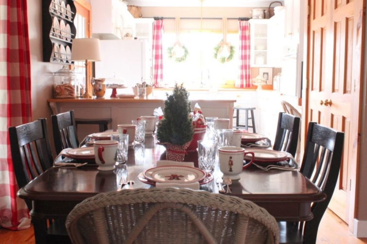
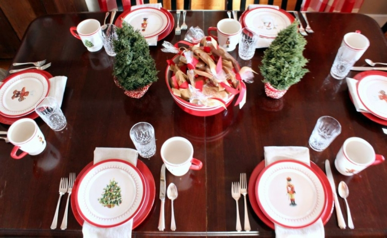

.png)
.PNG)
.PNG)
.PNG)
.PNG)
.PNG)
.JPG)
.JPG)
.PNG)
.PNG)


How is your holiday decorating coming along? With Thanksgiving so late on the calendar this year, it seems we are having to squeeze everything in much faster to be ready by Christmas Eve. I never want to overlook Thanksgiving because I think the spirit of Christmas begins with a heart of gratitude, but it would definitely help if it came early in November! Maybe we can see about getting that changed. 🙂

Since we are talking about decorating, do you have your table set with Christmas dishes? This is my third year of using the Williams-Sonoma Christmas ones I purchased through a number of Ebay auctions. I still appreciate its variety of patterns, and I fully intended to go in the direction of the Nutcracker theme this year, but cookies and gingerbread just made more sense to me for a kitchen.
Instead of using the gingerbread house in the center of the table like I did last year, I decided to branch off of the Christmas tree theme in the pattern. I ended up stealing the two little trees out of the kitchen to use on the table since they were the perfect scale for there. (I am using live ones now in the kitchen.) In the center is a large red mixing bowl (from Hallmark several years ago) filled with bags of cookies tied with red and cream grosgrain ribbon.

It is not a fancy centerpiece, and it can be removed easily for meals if needed. (I don’t know how families are able to serve food on the table with some of the elaborate centerpieces I have seen lately.) You can see that the cabinet in the dining room has a wreath with the jute webbing like the kitchen window, and there are touches of red in the cookbooks and other things in there.
I did not use the jars of gingerbread houses on the antique cabinet this year. They are still in good condition, but I wanted a change. To store them, I simply remove the lid, cover it tightly with plastic wrap that is held in place with a rubber band, and put the lid back on. The jar is then kept in that cabinet until the next year. The gingerbread houses that are not in jars, are put in a super large zip lock bag and stored in our deep freeze. That is how I stored the one in the photo below this past year.
Again, I wanted to use the tree theme along with the gingerbread houses, so you can see that I added them to the little display here…along with some cookies for Santa. 🙂
And that wraps up the holiday decor in our dining room this year. The weather has not been very cooperative for taking indoor photographs, and it gets dark quite early now. So please forgive the lighting (and fuzziness) in some of these in today’s post.
Don’t forget as part of my Christmas Favorites, we are giving away a $25 Williams-Sonoma gift card in a random drawing on Sunday night (12/8/13.) Just leave a comment on any or all of the Christmas Favorites posts that publish between Nov.29 and Dec. 8.
From all your comments in the last post, it is obvious we need to have a huge cookie swap! (Great idea Lisa!) Good grief at the variety of cookies you all talked about, and I just loved all the ones that had a family connection to the cookie. I am leaving you with another question to talk about today so that you can jump right on in and comment for another chance to win the gift certificate.
Do you have a Christmas china pattern, and if so, what it is?
Can’t wait to hear from you!
***giveaway has closed***


.PNG)
I have a 30+- year old set of Royal Gallery Holly fine china (which is similar to the Lennox Holly pattern) purchased from Davison’s at the after-Christmas sale.
We have a lovely snowflake pattern China set!
Catching up on your posts again. 🙂
I have a holly pattern. Holly leaves and berries are one of my
favorites. I do love those small trees on your table. Perfect!
You have a lovely home! I love your dishes! Merry Christmas!
I have plates with Christmas trees on them, but I have not used them yet.
We use table ware my father brought home from Thailand from 1969, with beautiful teak handles.
We just use white plates but change up the napkins and placemats for color.
I use the Christmas dishes that go with my everyday pattern I’ve used for thirty years now. I have the Pfaltzgraff Heritage. I sometimes add red or green solid pieces to change it up. I love the WS pattern you have. Maybe it’s time for a change.
Beautiful ideas. Your classroom must be fun with all your creativity. Can’t wait to see more!
I love your pretty decorations! I have the Lenox Holiday pattern china with holly on it. It makes me happy to get it out and use it every year.
Just found your blog and have been catching up with past posts. Love that your house has color!!! All of your travel posts make me want to head east. My husband’s aunt and uncle live in Beaufort. May need to plan a trip.
Love your china with your new curtains!
I don’t have Christmas dishes, but I like yours. So cute and festive 🙂
I love my Christmas dishes! They are the Holiday Gathering pattern by Lenox.
Love your blog! After years of waiting I now have a good collection of Spode Christmas Tree. I hate I don’t get to use it longer!
I have a pfaltzcraft pattern with the Christmas tree in the middle and the toy train underneath the tree. My mother-in-law started me on this pattern and thanks to eBay, i have added to it over the years. I now have a complete set for twelve.
I have a set that Target carried ten years ago, and I still LOVE it! Wish I could find more pieces. Simple design with a pointsettia in the middle. Still looks updated even ten years later!
While I love classic white and use it often;I have started collecting red transferware. I use it with vintage red glass goblet. Love the festive look!
I love my Longaberger Christmas pottery. When I need extra pieces, I just pull out my regular Longaberger pottery – the colors are perfect together. I think everyone needs some Christmas china – even if you just get mugs or luncheon plates that coordinate with your everyday.. Your table is just beautiful!
I have a set (only 4) of Fitz and Floyd St. Nicholas dishes that my husband bought from a women who worked at the Christmas tree lot. She had 4 five piece place settings so he bought them for only $50!! He knew I loved dishes. After looking them up we realized what a steal he got! I used to put them in my hutch but haven’t in a few years because my decor is a little different. Your post makes me want to dig them out though. Maybe so! 😉 I also have some cheapo Dollar General snowman dishes that I end up using more because I have a lot so when we have our family get together we eat on them. My great niece and great nephews used the snowman cups a couple of days ago for their hot chocolate. 🙂 I’m kinda a “white” girl now so that is mainly what is out. 😛
Still coveting that jute ribbon, so chic. I second the motion for a cookie swap, next year! Do you follow Susan Branch’s blog – she has a post with all her top cookie recipes. Favorite Christmas pattern (I love them all), but it’s Spode’s Christmas Tree for me!
I use classic white dinnerware, with festive plaid table linens. Not much fuss here, we are casual, with littles around. Hard enough to just keep the tablecloth in place! My 2yr. old granddaughter likes to “reset” the table, moving place settings and silverware all around! Lately, we’ve switched to having an all hors d’oeuvres Christmas, making that our meal. The kids must also visit the other sides, so we found it better to just not do a big dinner they didn’t have room to eat. We have several pounds of shrimp, snack sausages, cheeses, veggie and fruit platter, dips, crackers and cocktail rye or a bread bowl, along with cookies, brownies, and sometimes cake or pies. We all share the prep work and cleanup. Then around the New Year, when things calm down, we do a big dinner, with Roast Beef and Yorkshire Pudding. Family tradition for at least four generations now, the holiday isn’t complete without that dinner!
You decorate beautifully and your Christmas decor is my favorite! I have a Crate & Barrel snowman pattern mugs and plates (on clear glass) pattern that I have had for years and I do place that on a shelf with some hot cocoa mixes and cookies for the holidays!
Kelly, I so love your display of pictures in your kitchen. It must be the teacher in you. Your drapes are fabulous. I have a small check navy blue and light carmel color in mine. Enjoy your blog!
I love your style. Your home is beautifully decorated. I loved your bedroom decorations from Christmas last year so much, I copied it in my own bedroom. I am still looking for a cool pillow, but I really like how it turned out. Merry Christmas to you and your family.
Your house looks wonderful as always. I hope you’ll share your other decorated rooms too!
Love, your blog and your home! Portmeirion Holly and Ivy, which I display until the end of January since it is more of a winter theme.
I would love to have the Spode Christmas China, but have never pulled the trigger.
Kelly, your dining room looks so inviting and ready for Christmas, it is just beautiful. My dining room is decked out in Lenox Holiday. My sweet husband started buying pieces for me over twenty eight Christmases. Lenox Holiday gives the dining room the richest hue of green and gold. The Holly just pops on gold plate chargers. Christmas is the most beautiful time of year for the dining room.
Your gingerbread houses give me the smiles every time! Your home just seems made for the holidays. 🙂
I actually don’t have a Christmas china pattern. We use our everyday white dishes and spruce up the table with a tablecloth that was passed onto us by my husband’s aunt.
This is, by far, my favorite blog. I enjoy every posting. Especially these holiday ones! Can’t wait to see more of your house at Christmas. My holiday dishes are a pattern called Holly Holiday that was sold through Macy’s several years ago. It somewhat mimics Lenox’s traditional holly pattern, but I think it’s even prettier! (And was less expensive!) Looking forward to more postings.
I really have enjoyed your decorating so far!
I started with Waechtersbach Christmas Tree not long after I got married in 1983, still love it. I’ve been so busy lately I forgot to bring it out…late Thanksgiving is impacting my holiday prep for sure. Oh, and teaching, I suppose! Have a great Christmas, Kelly. Love your blog.
I’m using the classic white this year along with red linens. Merry Christmas!
My pattern is an old one…..octagon shaped dishes by Nikko. I will pick up random pieces by Spode, Lenox or Culbertson when I find them!
I have a set from dollar tree! They look great. I don’t have to worry if one of the grandchildren break one.
I always mix my white china with Pottery Barn’s reindeer china. It is a mix of classy and whimsical fun 🙂 We have a large farm house table that my husband made. I usually decorate it with a burlap runner, lots of greenery and candles. It really makes the plates and the table stand out . I wish I could keep our table like that all year!
I JUST LOVE THE RED CHECKED CURTAINS!! Did you make them. I want for my living room, but I will have to sew them myself because of odd shaped windows. Tell me how you made them if you did. I have a week off during Christmas and New Years. But have to find the material.
Love your decorating!
I don’t have an expensive set of china, but I have a pretty holly pattern with gold trim, simple and classic that was a gift from my inlaws one year. Love getting out my Christmas dishes to use during the month! Thanks for the giveway offer, Kelly.
Kelly,
I do have a Christmas china pattern but it is not all matching. My Mom has bought and given me mixed pieces over the years adding casserole pans and other serving pieces as the years have gone by. They tie right into my everyday cream colored Longerberger basket weave dishes. My most favorite of all though are the silverware she gave me a couple of years ago. They came from Target and they have snowflakes etched into the silver handles. I get everything out for christmas eve dinner. We serve tons of appetizers and lots of Christmas cookies. Both sides of the family come over and it just so much fun. I wash everything up that night after everyone is gone and lay it all out for our breakfast the next morning.
Love your table scape and holiday décor. I think you have that wonderful “minimalist” mindset in your decorating. I don’t have any holiday china, but will be on the search after the holiday to see if I can just pick up a few plates for fun. Every time I visit your blog, I wish I had your wonderful built ins. Very smart. They are so great to have for display and storage, rather than a furniture piece that takes up floor space. Thank you for the inspire Kelly.
Debra
Hi Kelley. Love your dishes. Everything looks just lovely.
I have Christmas dishes. The pattern is Old Britain Castles.
It is a rose/mauve with a Christmas tree in the center.
I use burgundy salad plates and small oval white dishes with small burgundy flowers that sit in the top left corner. These small dishes sit on top of the salad plate and their crescent rolls sits perfectly in them.Sitting the table is my favorite thing.
I put a small gift at each place setting. Everyone enjoys it and looks forward to the table and how I change it up from year to year.
I use my mother’s oval white platters for the meats.Have a lovely day Kelley… Blessings, Becky
I love how you decorated your dining room. It flows so well with the kitchen. The red you use is perfect – a cherry red. You and your home are such an inspiration. For now, I use white dinnerware, but next year…..hmmmm. That’s gonna change because I plan on buying some red dinnerware to use instead. Thanks for sharing and Merry Christmas!
Lovely table! When we downsized several years ago, our Christmas dishes went.
I really enjoy using white dishes and my pastel lLuray dishes. Decorative touches make it festive.
Hi, Kelly,
As always, your blogs are the highlights of my day! Thank you!
We have had a set of Christmas dishes I bought more than 25 years ago when we lived in Virginia – it’s called ‘Christmas Time’ by Nikko. It was affordable but I still had guilt pangs thinking that I should spent our money on more important things – but every year I am so happy that I bought it over time, when on sale, piece by piece.
Could you please tell me what the Gingerbread Houses in the big jars are resting in? Sugar? Flour?
Monika
I love the simplicity of your centerpiece and the pops of Christmas red in your decor. I wish that they still made the Williams-Sonoma dishes that you set your table with. They are just my style!
My mother-in-law started Holiday by Lenox china for me the first Christmas we were married…32 years ago. And, I still love it. I keep it displayed in my china cabinet all year because I like it better than my wedding china. I have this thing for dishes. I also have everyday Christmas dishes that are red and white/cream gingham and gingerbread men. I forgot what they are called but the plates don’t fit in the dishwasher which is a problem. I love seeing you different tablescapes. Merry Christmas!
We have Christmas dishes handed down from my husband’s great aunt. They depict a snow scene with a cabin and blue and white snowflakes. They don’t necessarily go seamlessly with our decor, but they bring back fond memories of Dh’s great aunt, who was very much like a grandmother to him.
I don’t have Christmas dishes. We do more of a winter theme and don’t use red much. I was thinking of getting clear plates where I could change out theme that peeks through the plates. You’ve done a beautiful job of making your home warm and festive.
Your Christmas table is so pretty! I love all the pops of red! Thanks for the tip on storing Gingerbread houses; I had no idea they would last. I love your china; I use Spode’s Christmas tree. I started collecting it over 30 years ago. Thank you for hosting this wonderful giveaway too!
What a lovely table….everything is so festive at your house….can i come over and visit???? My Christmas dishes are from Christopher Radko that Target carried…I was just at Target the other day and forgot to look and see if they are carrying them this year. Love them! Thanks 🙂
Another beautiful and inspiring room. I bring out our Nikko Happy Holidays dinner plates and Martha Stewart plaid dessert plates the day after Thanksgiving. We use those daily during the Christmas Season. I also switch out all our glasses. For Christmas Dinner I use my mom’s china. It’s cream with a maroon and gold border. Her sterling silver also makes an appearance every Christmas. When I was a little girl, I was in charge of setting the table. Now, when I set the table with her china, I feel like she’s with me.
What a fun table you’ve set! I don’t have Christmas china anymore, but currently have a set of solid white dishes that I accent with red for Christmas. It is still very festive looking!
I have yet to decorate, but have plans to this weekend. I am feeling a bit behind! EEK!
Thank you for once again, inspiring me with your lovely home.
Hi Kelly,
Your table looks so pretty! I have Spode’s Christmas Tree pattern which I have collected over the years. We start using it December 1st.
Thanks again for your beautiful blog! Anne
I love the table because of its simplicity. And you know I’m dying to see “my” porch that I get a peek at through the window! One question though…can you please tell me how you tied that gorgeous bow on the wreath? With jute (and burlap) it’s so bulky I have a hard time getting mine to look as pretty as yours!
We’re off to Atlanta tomorrow (Friday) for the SEC game on Saturday….lord help me!
Merry Christmas Kelly. Your home looks wonderful…as usual. Love the gingerbread house and trees idea…truly a walk through the snowy woods:-) My centerpiece is the nativity scene with candles and straw surrounding. Usually it’s tucked away in the bookcase in the family room, but wanted it right in front of us when we eat as a reminder of the true meaning of Christmas. I borrowed the idea from you…thanks again for all the inspiration! My Christmas china is Magnolia by Tienshan. I purchased it years ago as my inspiration for moving to NC, (still in Ohio) but I love the pattern of the magnolia flowers and buds. I use it for company as well as everyday a lot. Still dreaming of NC! Thank you for sharing your lovely home with us this Christmas.
My sister in-law got me some cute luncheon plates at the Dollar General several years ago and I liked the pattern and needed some more, I was lucky enough to get their last couple of sets to make 12. While there, I also found these luncheon plates that have a log cabin on them and a deer which work well with my nature theme this year.
Thanks for sharing your beautifully decorated home!
I adore Christmas china and have had several patterns over the years. Now I’ve “settled” on Holiday Gatherings in the Berry pattern by Lenox. It is mostly discontinued but still available here and there. Your table is so welcoming (and I agree, how do people actually eat at some of those tables, heh!).
Lovely and so inviting. And your tablesetting looks like you are really going to sit down and eat, without removing TONS of items from the centerpiece and between placesettings. i admire all of the beautiful tablescapes out there in blogland, but you wouldn’t actually be able to use them. As for Christmas china, I had some unexpected cash last January and bought myself a complete service of Villeroy & Boch’s French Garden Noel. Was SO excited to get it out and start using it this year! Love your WS dishes, too!
Love the tree theme this year:) My great aunt gave me the serving dishes and mugs from her Spode Christmas Tree china, I have no idea what happened to the dishes. I will be using the mugs when I make up my hot chocolate bar, hopefully sometime this week. As always, thanks for the inspiration:)
Thanks for the info on preserving your gingerbread houses. You’re the best! One of these years I’m going to make one!
A few years ago, I started to collect a Pfaltzgraff Christmas pattern and about two years in, they discontinued it. BOO! So now I just pick up pretty dishes here and there that I like. I mostly use them for decor anyways since I host Christmas Eve and we don’t have a big sit-down meal.
You’re dining room looks lovely as always!
I love all the touches of red. It’s right perfect for some holiday cheer and goes perfectly with what you already have. For our ‘Christmas China pattern’, we just combine our everyday dishes, Mikasa French Country, with Johnson Brothers Old Britain Castles in Pink.
I love a nice white or cream colored pattern…that way I can dress it up with Christmas tablecloths….it is easy to store because you can use it every day and I can make it look like any holiday….by the way your table looks fantastic…
Kelly, I love you table. I have plain white dishes, but have added plain red for Christmas. I also have a black with big green holly tablecloth by April Cornell that adds some punch. Have a wonderful Christmas.
Good morning Kelly! The dining room looks amazing! You have such a magic touch! I love your red Hallmark bowl [I collect bowls] — and I have to agree with you… don’t know how people make these large centerpieces work! Perhaps they are just for show? I only had a small arrangement in the center of the table for Thanksgiving, and I had to remove it in order to have room for all of the serving dishes!
I have a few odd pieces from Spode’s ‘Christmas Tree’ pattern! I love china in general, and to have a Christmas pattern would be wonderful!
I have always loved the Christmas theme china, but have never gotten any. When I married I chose a china pattern I could use with any occasion. It is white with silver flower trim around the edge. We use it every Christmas morning for Christmas breakfast. I do have Christmas mugs we use all season long for coffee, hot chocolate and other drinks. I love your touches of color that make everything pop. I’m going to start doing that.
I love the way you styled the shelving. So cute with the wreath!
I LOVE my Christmas china! My mom let me pick out a pattern after I graduated college and after many years I had a complete set. It is Naif Christmas by Villeroy and Boch…I love it because it is more winter than Christmas and can be used all season. Love the gingerbread house jars!
I love the warmth and charm of your décor!! It’s not overdone……just inviting and so pretty. Thanks for sharing family life with your readers. I too am inspired!
I don’t have Cmas china/dishes. I have thought about it for years, but could never decide on a pattern. And now I have too many sets of dishes to add another! Love your blog – read it every time you post! Merry Ho Ho!
I have two sets of dishes. Plain white everyday Villeroy and Bach that can be dressed up or down, as well as red transferware. It works so well for Christmas, Valentine’s, 4th of July, Back to school, etc.
I don’t have “Christmas” China. But, I do love to set our table with white dinner plates paired with vintage Anchor Hocking Royal Ruby salad & dessert dishes that were given to me by my mother. I also use a vintage red & white Christmas tablecloth. Then, I add a few candles & some greenery for a very festive table! Love your Williams-Sonoma Christmas China & all the touches of red in your kitchen.
Kelly, beautiful Christmas decor!! Love your blog-you inspire me!! Thanks for the chance to win!!! Merry Christmas!!
I love your new curtains! (I’ve been obsessed with that same James Farmer picture too!) My Christmas china is tartan plaid. I’ve had it for 25 years now, and I still love it!! Two years ago I added the nutcracker dessert plates from Williams Sonoma. They look beautiful with the tartan plaid dinner plates!
(I love your blog! It’s always such an inspiration!)
Love your beautiful red table setting. I have had the Lenox holly christmas dishes for years. I still like them but as things go my tastes have changed and would prefer a simpler pattern. Wish I could find a nice plane red dinner plates and change the salad plates. So enjoy y,our blog!
Kelly, I thoroughly enjoy your blog and love your beautiful home! Merry Christmas to you!
What a charming table!! My holiday pattern is the Spode Christmas Tree…I have had it since I was in my 20’s and look forward to using it every year!!
Love what you said about Thanksgiving…I too wish that it was earlier…like Canada’s. Then, maybe we wouldn’t feel so rushed at Christmas and be able to enjoy each season as it comes. The media rushes things so much that by the day after Christmas I am more than ready to throw out the tree. I would love to be able to enjoy and celebrate all the way to Jan. 6th…
My Christmas china is “The Holly and the Ivy” an English ironstone.
I don’t have Christmas dishes. I guess I thought of that as a luxury, and it never fit into my budget. But, I sure enjoy looking at other’s! 😉
I don’t have a “Christmas” china. I use my collection of “Memory Lane” red transfer ware. It is so versatile. I can use it Valentines day, Mother’s day, etc.! I also acquired the pieces from Ebay auctions! Thanks for the opportunity to win a gift card!
Gave my Spode Christmas tree dishes to my daughter-in-law several years ago, so now just use plain white dishes and dress up the table with napkins, candles and flowers.
I attended an Advent Tea this evening with my daughter and her friend and each table had a different table setting decorated by the ladies of the church. Just so lovely! My table setting (already done!) is made up of two different Christmas trees designs on a white background and I have had them for years. Enjoyed looking at your table! Feeling a little rushed myself with losing about a week with a late Thanksgiving. I don’t decorate for Xmas until after turkey day– I also feel that the spirit of gratefulness ushers in the season for me and my family. Now if only we could get the temperature out of the 80 degrees!! PS– the new store I went to was Trader Joe’s NOT Bahama Joe’s!! ;)Crazy me! And my favorite cookie is a butter spritz.
A girl after my own heart…..love all the red, particularly the red check drapes! Merry Christmas!
Hi Kelly! Love your blog! House looks so festive! Merry Christmas!
Oh I just love all your red! I am still drooling over your new curtains! I cut fresh evergreens, nandina berries, and magnolia today for finishing Christmas touches! It was so pretty in western NC today that I even washed my car in the driveway…the mailman started laughing when he dropped off our mail. My husband is making me two boxwood wreaths tomorrow for the doors that lead to my porch and then I’m calling it quits. On to making chex mix and a cheese ball tomorrow……..Merry Christmas!!!
I prefer to use a classic white china pattern that can we dressed up with holiday linens and table decorations.